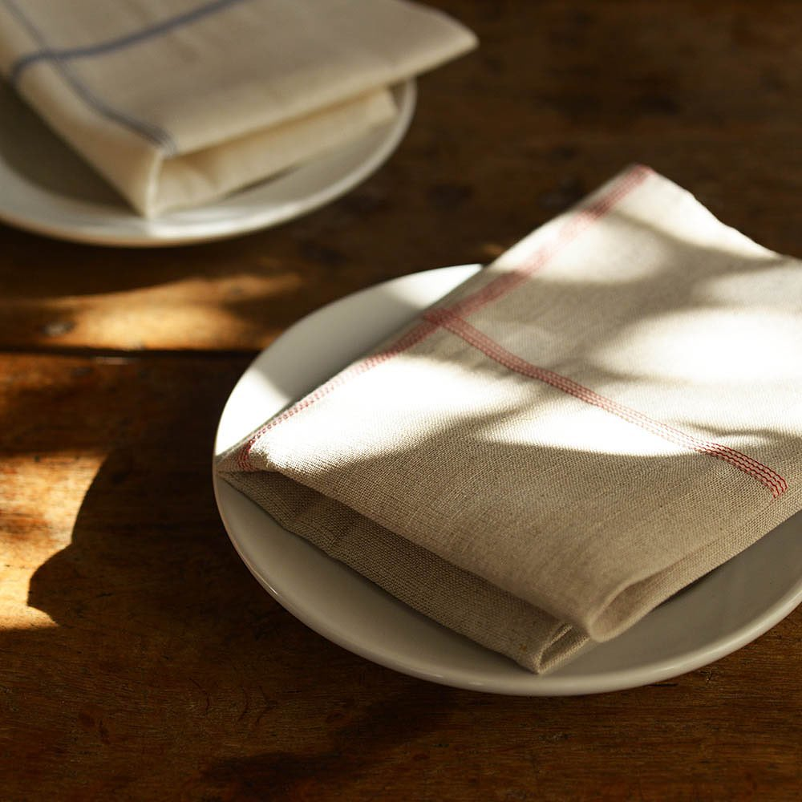
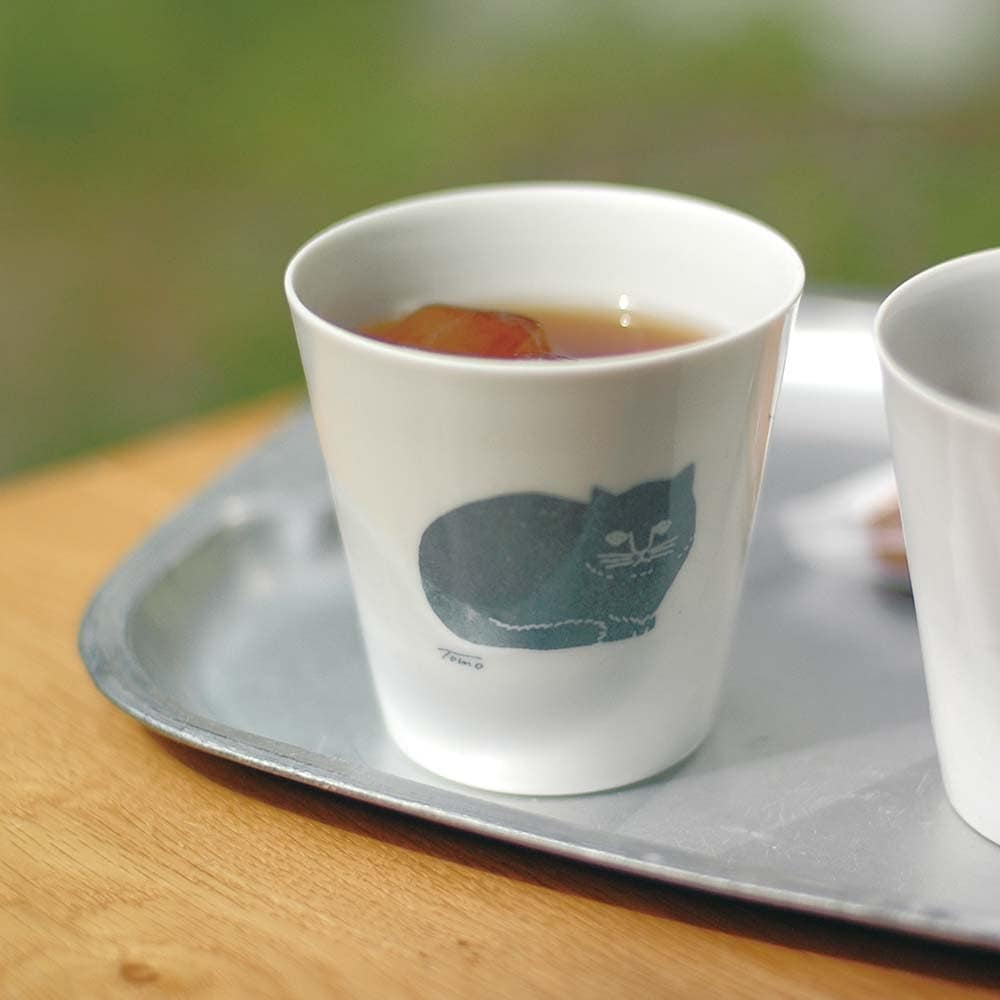
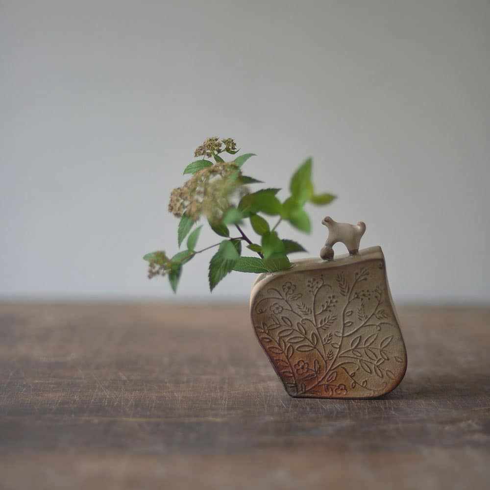
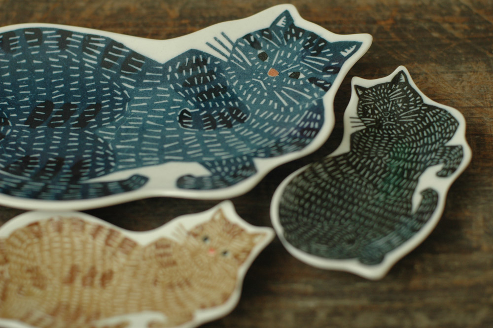
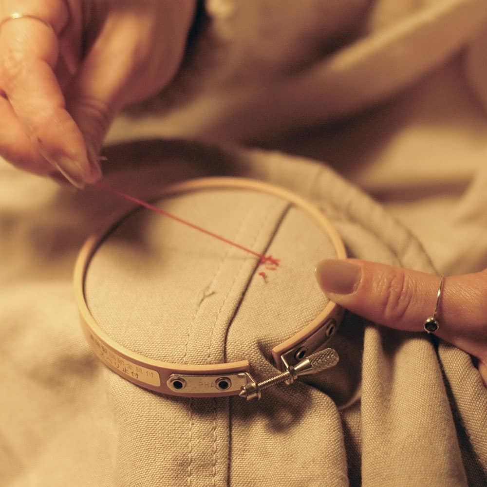
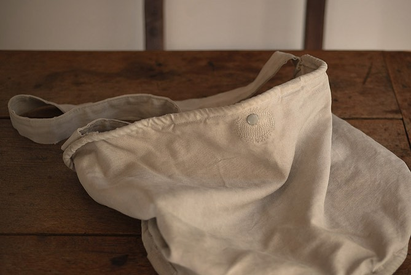
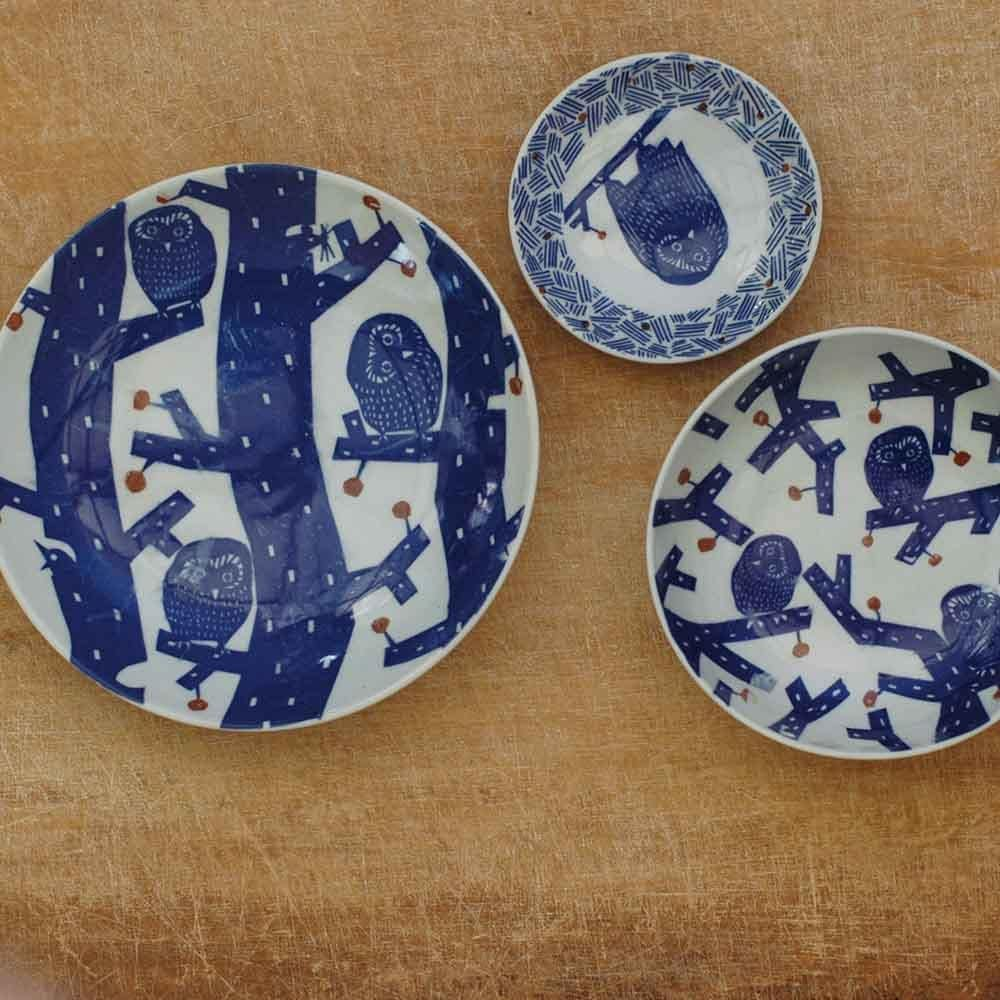

我们总是会喜欢新的东西。
新的杯子。
新的餐具。
新的笔记本。
新的布袋。
刚买回来的时候，
它们干净、完整，
还没有留下任何属于我们的痕迹。
可是有些东西很奇怪。
用久以后，反而越来越喜欢。
布料变柔软了。
木头的颜色变深了一点。
杯子留下了细小的使用痕迹。
纸张也因为被翻过很多次，而有了自己的样子。
它们不再像刚买回来时那么完美，
却开始慢慢进入我们的生活。
Classiky 是来自日本冈山县仓敷的生活杂货品牌，长期与日本各地的作家、设计师、工匠和制造者合作，制作纸品、陶瓷、木制品、布艺以及各种日常用品。
我喜欢它的原因，
是它从来没有把日用品做成只能远远欣赏的东西。
它们本来就应该被使用。
而真正有意思的地方，
也许正是从我们开始使用它们以后，
才慢慢发生。
The Beauty of Everyday Things

Classiky 最吸引我的，
并不是某一个特别漂亮的产品。
而是它对“普通东西”的看法。
一个盘子，可以只是盘子。
一块布，可以只是布。
一张办公用纸，也可以只是办公用纸。
但如果有人愿意重新想一遍：
我希望它是什么样子？”
事情就开始变得有趣。
它没有刻意把日常生活变得精致。
只是让那些我们每天都会碰到的小东西，
多了一点值得喜欢的理由。
Things Made for Everyday Life

漂亮的东西，
有时候反而最容易让人舍不得用。
一只喜欢的杯子，放在柜子里。
一本漂亮的笔记本，一直舍不得写。
一块好看的布，怕弄脏，所以很少拿出来。
最后，它们一直保持着刚买回来的样子。
但 Classiky 给我的感觉不太一样。
它做的东西，很自然地属于日常。
盘子就是拿来吃饭的。
纸张就是拿来写字的。
布袋就是拿来出门的。
收纳盒就是拿来装东西的。
它们不需要被特别对待。
也不需要因为“漂亮”，
就被放到一个安全的地方。
我很喜欢这种想法。
因为一个真正进入生活的东西，
本来就应该被使用。
被拿起来。
被触碰。
被弄脏一点。
甚至被不小心留下痕迹。
设计并不是为了让东西永远保持全新。
有时候，
设计真正完成的那一刻，
反而是我们开始使用它的时候。
The Beauty of Ordinary Things

Classiky 对“普通”的理解，
让我觉得很有意思。
它并不因为一个东西太普通，
就认为它没有设计的价值。
相反，
它会从那些已经存在的东西里，
重新寻找值得留下来的部分。
例如一些办公用品。
发票纸。
收据纸。
这些本来只是工作中每天都会出现的东西。
Classiky 的创始人田边先生在采访中提到，
他当时觉得普通的办公用品太无聊，
所以重新设计了这些每天都会使用的纸品，
加入简单、复古、带有温度的设计。
我很喜欢这个想法。
因为它不是在寻找一个“特别的东西”。
而是在问：
如果这个东西每天都会出现在生活里，它有没有可能成为自己真正喜欢的东西？
Made by Hand, Not Made Perfect

Classiky 有些产品最有意思的地方，
反而是它们并不完全一样。
颜色可能有一点不同。
印刷的位置可能有一点变化。
表面可能留下制作过程中的痕迹。
如果用工业生产的标准来看，
这些都可能被认为是不够“完美”。
但 Classiky 并不急着消除这些差异。
它们本身就是制作的一部分。
我特别喜欢一个例子：
盘子上的图案并不是直接用现代机器整齐地印上去。
它采用了一种历史可以追溯到江户时代的传统印刷方式。
图案先被刻在印版上，
再转印到薄薄的和纸，
之后才被转移到陶瓷盘上。
因为陶瓷表面并不是完全平整的，
和纸无法百分之百贴合。
所以最后留下的颜色深浅、
细小皱褶和不规则，
每一只盘子都会有一点不同。
这种差异并不是后来才出现的瑕疵。
它从制作的那一刻，就已经存在。
Keeping Old Techniques Alive

更让我喜欢的是，
Classiky 并不是为了“看起来很传统”，
才使用这些方法。
创始人田边先生在采访中提到，
有些传统手工技艺正在逐渐消失。
机器生产更快。
成本也可能更低。
如果只追求效率，
很多传统制作方式自然很难继续存在。
所以有时候，
他会刻意选择这些已经逐渐消失的传统工艺来制作产品。
这让我觉得很有意思。
因为一个看起来很简单的盘子，
其实可能不只是一个盘子。
它背后还有一种正在慢慢消失的制作方式。
一块纸。
一层颜料。
一次转印。
一个人的手。
最后才成为我们手里看到的东西。
不只是一个物件。
有时候，也是制作这个物件的方法。
Better With Time

当然，并不是所有 Classiky 的东西，
都会因为时间而发生明显变化。
但我喜欢它所传达出的那种感觉：
一块布，用久以后会变得柔软。
木头被反复触摸，会慢慢产生自己的光泽。
一个每天使用的杯子，也会和某些早晨联系在一起。
东西本身没有记忆。
是我们不断使用它，
才让它拥有了记忆。
所以“旧”并不一定意味着需要被替换。
有时候，
旧只是意味着：
When an Object Becomes Part of Life
一个东西的故事，
也许不是从买下它的那一天开始。
而是从你真正开始使用它以后。
刚买回来的时候，
它只是一个 Classiky 的产品。
可是当你每天拿起它、
把它放在桌上、
把它带出门，
它就开始和你的生活发生关系。
直到有一天，
你甚至不会再想起
自己是什么时候开始习惯它的。
它已经不只是一个物品。
它已经成为生活的一部分。
也许这就是我喜欢日用品的原因。
它们不会替我们制造特别的时刻。
它们只是安静地存在，
然后陪我们经过那些普通的日子。
为什么 Soft Archive 想留下 Classiky？
有些东西值得被收藏，
并不是因为它们特别。
而是因为它们认真对待了普通。
一张每天都会被使用的纸。
一个每天都会被拿起来的杯子。
一只可能留下细小差异的盘子。
一种差一点就会消失的制作方式。
Classiky 让我看到，
设计不一定要站在生活之外。
它可以藏在一张发票纸里，
藏在一个盘子的印刷痕迹里，
也可以藏在一个每天都会使用的收纳盒里。
这也是我想把它留在 Soft Archive 的原因。
真正值得收藏的，
不一定是最稀有的东西。
有时候，
只是那些让普通日子
变得稍微有一点不同的东西。
我喜欢的一个小细节
不是刻意制造旧感，
也不是把“不完美”当成一种装饰。
而是允许制作本身留下痕迹。
一点颜色深浅。
一点印刷变化。
一点不完全对齐。
这些东西不会让物品变得更昂贵，
却会让它变得更像一件
真正被制作出来的东西。
有时候，
我们收藏的也不只是一个物品。
也是那些留在物品身上的小小证据。
我们平常总是在追求整齐、准确和完美。
但有时候，
一点点不一样，
反而让东西有了自己的性格。
让我记住 Classiky 的几个细节
- Classiky 没有把“日用品”和“设计品”分成两个世界。
- 它会重新思考那些原本很普通、甚至有点无聊的东西。
- 一些产品保留了传统制作过程中自然产生的细小差异。
- 它与不同的作家、工匠和制造者合作，让不同的制作方式进入现代生活。
- 它也会重新设计普通的办公用品，让每天都会被使用的东西多一点值得喜欢的理由。
- 我最喜欢的，反而不是某一个具体产品。
- 而是它让我开始重新注意那些每天都会出现在身边、却很少被认真观察的东西。
-
一张纸。
一个盘子。
一个盒子。
一只布袋。 -
它们原本都很普通。
只是有人愿意认真对待它们。

它看起来很简单。
盘子上是动物图案。
可是靠近一点看，
你会发现颜色并不是完全均匀的。
有些地方深一点。
有些地方浅一点。
边缘也可能留下细微的变化。
这些并不是生产失误，
而是传统转印工艺留下的痕迹。
所以每一只盘子都会有一点点不同。
我喜欢这种感觉。
因为它没有把“手工”变成一种很遥远的东西。
你最后还是会拿它来吃饭。
会把它放在桌上。
会洗它。
会继续使用它。
而是继续出现在每天的生活里。
Classiky
This archive might be for you if…
- 如果你喜欢会随着使用慢慢改变的东西。
- 如果你喜欢木头、陶器、布料和纸张这些自然材质。
- 如果你喜欢手工留下的细小痕迹。
- 如果你觉得“不完全一样”也可以是一种美。
- 如果你喜欢那些可以陪自己使用很久的东西。
我们总是在寻找新的东西。
新的颜色。
新的设计。
新的物品。
可是有时候，
真正值得留下来的，
反而是那些认真进入日常的东西。
一个杯子。
一块布。
一个盘子。
一张每天都会被使用的纸。
它们没有必要特别。
只要它们在某个普通的日子里，
让生活变得稍微好一点。
也许收藏的意义，
从来不只是把东西保存下来。
而是记住：
有些很普通的东西，
也值得被认真对待。
Sources
Information in this collection is based primarily on Classiky's official website and the interview with Classiky founder Shinsuke Tanabe. Soft Archive's reflections and interpretations are written separately as editorial observations.
More quiet things worth keeping.
Return to the archive and discover another ordinary thing, another small detail, another story.
Explore the Archive →